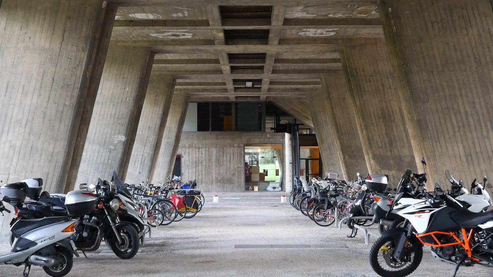
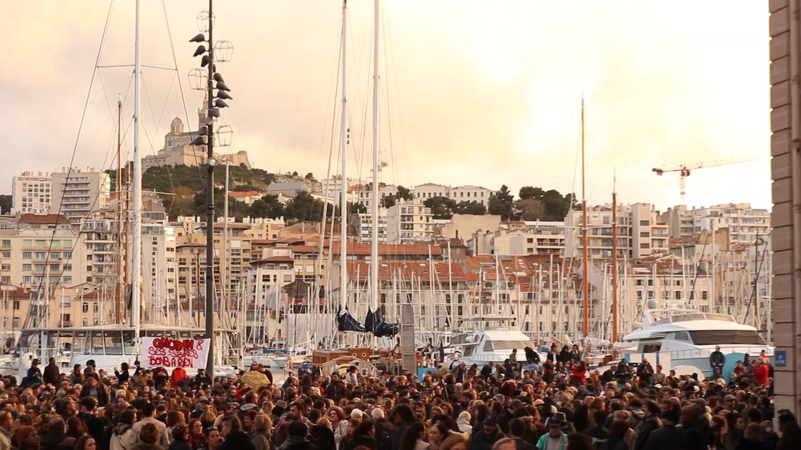
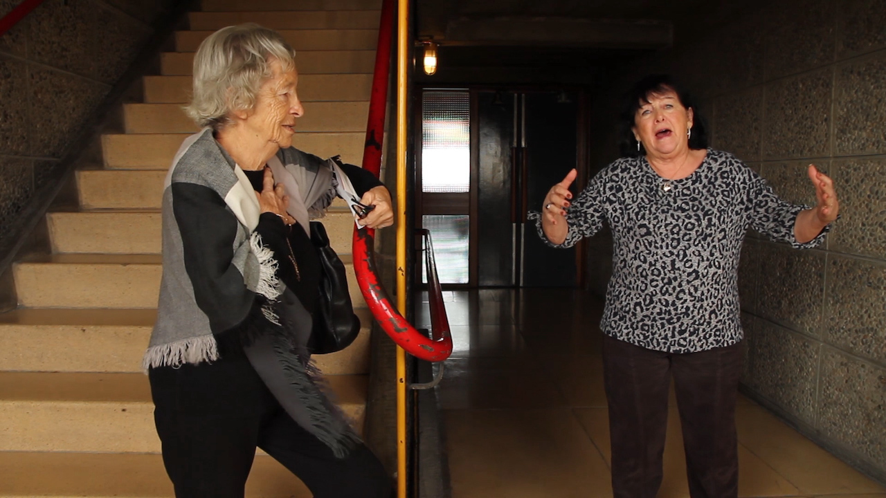
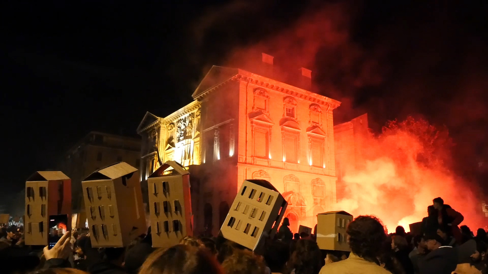

Films & Events
All by Marseille / Tout contre Marseille
(35 min,
2019,
Documentary)
The film "All by Marseille" looks at the
influence of urban architecture on social encounters in Marseille. Twelve inhabitants are portrayed
living and working in three locations around the city, capturing different periods in time and
approaches tackling this topic. During filming a number of residential buildings in the city centre
collapsed, reflecting how communal living is being endangered by aggressive gentrification.
Links
Team
Director & Editing & Camera
Eva Stotz
Original Idea & Interviews
Marie Hermann
Production Management
Diana Matus
Director assistant & Camera
Lena Birkhold
Music & Sounddesign
Frieder Nagel
Production
A Production of Goethe Institut Marseille and Prague
In Co-Production with ronjafilm Berlin and Mala Film Paris
In Partnership with Hors d'attente and Democracy 21
Festivals & Awards
- Screened at XIII. Istanbul International Architecture and Urban Films Festival
- Screened at FIDBA - Festival Internacional de Cine Documental de Buenos Aires
- Screened at Arquiteturas Film Festival Lisboa 2021
- Screened at Center for Architecture Camp / Praha “Ethnic markets in Prague and Marseille”
- Screened at La Friche Belle de Mai / Marseille, "Temps for Freiraum”
- Screened at „Zum Stand der Freiheit in Europa“ ZK/U Berlin



